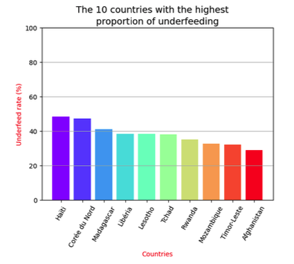

Study of undernourishment in the world
The FAO logo represents an ear of corn.
Mission carried out as a data analyst for the Food and Agriculture Organization of the United Nations (FAO), one of the UN's component bodies, whose aim is "to help build a world free from hunger".
The team leader, a health economics researcher, was leading the project. The project was related to a large-scale study on the theme of food, and more specifically on under-nutrition in the world.
Study requirements:
For 2017:
- Evaluate the proportion of people in a state of undernutrition.
- Evaluate the theoretical number of people who could be fed computed from global food availability.
- Same evaluation for the food availability of plant products
- Evaluate the use of domestic availability, in particular the share that is allocated to
animal feed, what is lost and what is actually used for human consumption.
- Identify:
- The countries with the highest proportion of undernourished people in 2017
- Those that have received the most aid since benefited from aid since 2013
- Those with the most/least availability/capita, etc., and any other information you might find useful to highlight the countries that seem to be in the most difficulty, food-wise.
Data used:
- Aide alimentaire.csv
- ​Dispo alimentaire.csv
- Population.csv
- Sous nutrition.csv
Partial result:
